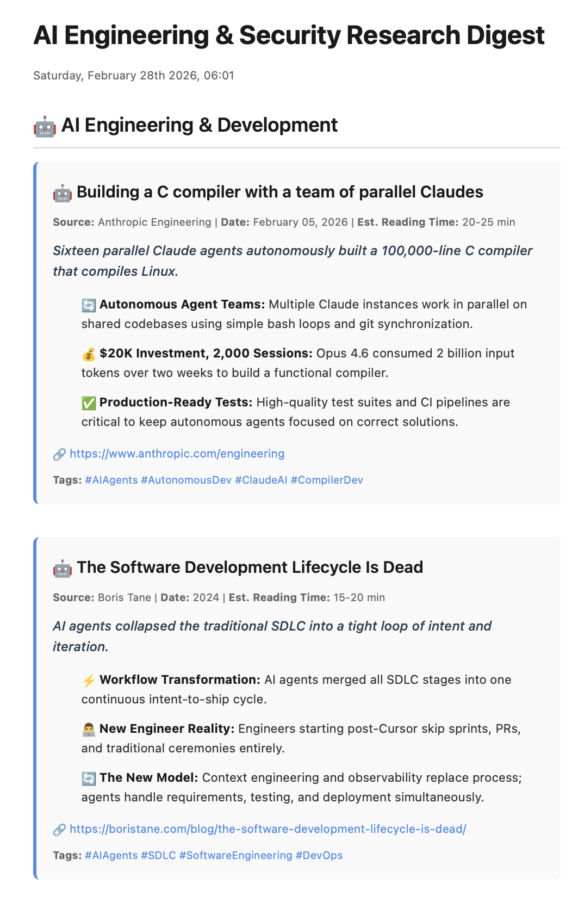

Your read‑later pile,
delivered every morning.
Daily Digest pulls the articles you saved to Raindrop.io that you didn’t have time to read, scrapes each one with Firecrawl, writes a tight three‑point summary with an LLM via OpenRouter, and emails you a clean, categorised digest — automatically, before breakfast.
The workflow, live
drag to pan · scroll to zoom · click a nodeThe interactive preview couldn’t load (it needs to be served over the web).
You can still download the workflow JSON and import it into n8n.
What lands in your inbox
Every morning you get one scannable email — your saved articles grouped by theme, each distilled to a hook, three takeaways and a few tags. No app to open, no backlog guilt.
- 🗂️Grouped by category. AI Engineering, Security, Culture and more — auto‑sorted from each article’s topic and tags.
- ⚡One‑line hook + three takeaways. The gist of every piece in seconds, with an estimated reading time.
- 🔗Source, link and tags. Jump straight to the original whenever something’s worth the full read.

↓ the email continues…How it works, end to end
Seven stages take you from a saved bookmark to a styled email in your inbox. Each box in the canvas above maps to a step below.
Trigger — schedule or on demand
A schedule trigger fires every morning at 06:00 for an incremental run. A manual trigger lets you run on demand, and passing fullSync=true reprocesses everything for a complete refresh.
Configure & reset
Workflow variables set the run timestamp, the base path and your Raindrop collection. The Raindrop and Summaries tabs of the tracking sheet are then cleared so the run starts from a clean slate.
Fetch bookmarks from Raindrop.io
Connects to your Raindrop account and pulls the bookmarks from a chosen collection — returning the title, URL and metadata for each saved article.
Scrape each article
The engine of the workflow: it loops one article at a time, extracts the URL, and uses Firecrawl to scrape the page into clean markdown. Failures are skipped gracefully so one bad site never stops the run. Results are written to Google Sheets.
Summarise with AI
Each scraped article is sent to an LLM via OpenRouter, which produces a compact HTML block: a one‑line hook, three key takeaways, reading‑time estimate, source and tags — colour‑coded by topic.
Assemble the digest
All the summaries are gathered and handed to a second OpenRouter‑powered agent that groups articles into categories (AI, Security, Culture…), adds a header, section titles and footer — without altering the article blocks — into one email‑ready HTML document.
Send it to your inbox
The finished digest is sent via Gmail with a dated subject line. The tracking sheets are cleared on the next run, so every morning’s email covers only what’s new.
What you’ll need
A running n8n instance plus a handful of accounts and API keys. Most have generous free tiers. Wire each one up as an n8n credential and select it on the matching node.
n8n
Runs on n8n Cloud (the hosted SaaS) out of the box — no self‑hosting required. A self‑hosted instance works too if you prefer to run your own.
Install n8n →Raindrop.io
Your read‑later source. Create a free account, save articles into a collection, and generate an API test token for n8n to read them.
Get API token →Firecrawl
Turns each article URL into clean markdown. Use the hosted API key, or point the node at your own self‑hosted Firecrawl instance.
Get Firecrawl key →OpenRouter
Routes the summary and digest prompts to an LLM. One key unlocks many models — this template points at a Google Gemini model, but you can swap in any other.
Get OpenRouter key →Google Sheets
Used as working storage for scrapes, summaries and digests. Connect via OAuth2 and create one spreadsheet with three tabs (see setup).
Connect Google →Gmail
Delivers the final digest. Connect a Gmail account through n8n’s OAuth2 credential and set your own recipient address on the send node.
Connect Gmail →Setting it up
Import the workflow, connect the six credentials, and fill in the two placeholders. About fifteen minutes from zero to your first digest.
Import the workflow
Download workflow.json, then in n8n choose Workflows → Import from File. The canvas’ sticky notes mirror the guidance on this page.
Connect Raindrop.io
Open Raindrop → Settings → Integrations, create an app and copy the test token. In n8n add a Raindrop credential (or a Header Auth credential) using that token:
Name: Authorization Value: Bearer YOUR_API_TOKEN
Then set your collection: open the collection in Raindrop and copy the numeric ID from the URL. In the Get many bookmarks node replace REPLACE_WITH_YOUR_COLLECTION_ID (use 0 for unsorted items).
Create the tracking spreadsheet
Make one Google Sheet with three tabs named exactly Raindrop, Summaries and Digests. Connect a Google Sheets OAuth2 credential, then point each Sheets node at your spreadsheet — replacing REPLACE_WITH_YOUR_GOOGLE_SHEET_ID with your document ID.
Raindrop → url, title, markdown · Summaries → url, title, summary · Digests → url, Digest
Connect OpenRouter & Gmail
Add an OpenRouter credential with your API key and confirm it’s selected on the OpenRouter Chat Model node that feeds both AI agents. The node ships with the google/gemini-3.1-flash-image-preview model — swap in any model from OpenRouter’s catalogue. Then connect your Gmail OAuth2 credential and, on the Send a message node, change the recipient from you@example.com to your own address.
Test, then activate
Run once with the Manual Trigger to confirm credentials and check the email. When you’re happy, toggle the workflow Active — the 06:00 schedule takes over from there. A second 15:00 schedule is included but disabled; enable it for a twice‑daily digest.
Heads up: this template ships with all personal data removed — credential IDs, sheet IDs and email are placeholders. Keep your own keys in n8n credentials and never commit them back to a public repo.